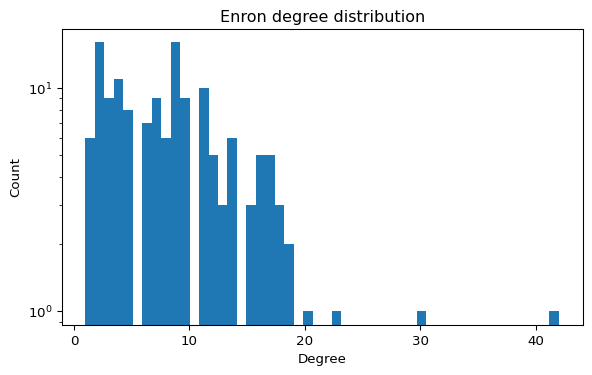
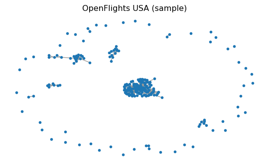

import networkx as nx
import numpy as np
import matplotlib.pyplot as plt
SEED = 7 # fixed seed for reproducibilityNetworks: Assignment
Real-World Data
In this assignment you will pick one real network and do two things, in order:
- Characterize the network (basic structural properties).
- Simulate propagation on it:
- Default track: epidemics with both SIS and SIR.
- Alternative track: a different propagation process (e.g., fake-news spreading).
These networks are meaningful contexts for epidemics:
- Enron email approximates a contact/communication network between people.
- USA Flights approximates a mobility/transport network connecting locations.
Your goal is not only to “run code”, but to justify what you measure, make your results reproducible, and interpret them.
Submission (Deliverable)
Submit two files:
- Code: a notebook/script that reproduces all figures and numbers (must run end-to-end).
- Short report (PDF using LaTeX, 2–3 pages) with:
- a table of core network metrics,
- at least 1 structural plot (e.g., degree histogram),
- top-10 nodes by degree centrality + one additional centrality metric (with interpretation),
- propagation figures:
- default track: 1 SIS figure and 1 SIR figure (mean over multiple runs), or
- alternative track: at least 2 figures for your chosen propagation model (mean behavior + variability or sensitivity),
- a concise interpretation answering the questions under “Discuss”.
Your report must state the exact parameters you used (for example \(\beta, \mu\), initial infected/seeds, number of runs, seed protocol, and any model-specific probabilities or thresholds).
Setup (Reproducibility)
Use a fixed seed for reproducible results. When running multiple trials, use SEED + r (where r is the trial index) so trials differ but remain reproducible.
Option A — Enron Email Network (person-to-person connections)
The Enron email dataset can be represented as a graph where nodes are email addresses and edges represent communication. It is widely used to study centrality, communities, and robustness (Leskovec and Krevl 2014).

Step A1 — Load and sanity-check
Use the local edge list if you cloned this repository:
data/ia-enron-only/ia-enron-only.edges
If you are working from the rendered website and do not have the data/ folder, download the official SNAP file:
https://snap.stanford.edu/data/email-Enron.txt.gz (Leskovec and Krevl 2014)
import networkx as nx
G = nx.read_edgelist("data/ia-enron-only/ia-enron-only.edges")
G = nx.Graph(G) # ensure undirected simple graph
print("N, E =", G.number_of_nodes(), G.number_of_edges())
print("Self-loops:", nx.number_of_selfloops(G))If the graph is disconnected, you may choose to work on the largest connected component for path-based metrics:
largest_cc_nodes = max(nx.connected_components(G), key=len)
H = G.subgraph(largest_cc_nodes).copy()
print("Largest CC size:", H.number_of_nodes())Step A2 — Basic properties (required)
Using definitions from Connectivity, report at least:
- \(N\), \(E\), average degree, density
- number of connected components + size of largest component
- clustering (average clustering and/or transitivity)
- top-10 nodes by degree centrality + one additional centrality metric (betweenness, PageRank, etc.)
You may also report average shortest path length / diameter on the largest component.
Centrality Metrics
Compute the top nodes by betweenness centrality.
import networkx as nx
bc = nx.betweenness_centrality(G)
# TODO: sort and print top 10 nodesQuestions to Explore
- Which nodes act as brokers (hubs) in the network?
- How does the graph change if you remove high-betweenness nodes? Answering this questions will be relevant for the epidemic simulations later.
- Can you detect communities with a simple algorithm?
Option B — USA Flights Network (mobility connections)
The USA Flights graph used here is a preprocessed snapshot built from OpenFlights airport/route data (Patokal 2017). It is commonly used to study connectivity, robustness, and hub structure.

Step B1 — Load and sanity-check
Use the local GraphML file if you cloned this repository:
data/openflights/openflights_usa.graphml.gz
If you are working from the rendered website and do not have the data/ folder, download the exact same file from this repository:
https://raw.githubusercontent.com/daniprec/BAM-Applied-Math-Lab/main/data/openflights/openflights_usa.graphml.gz
import networkx as nx
from pathlib import Path
import urllib.request
path = Path("data/openflights/openflights_usa.graphml.gz")
if not path.exists():
url = "https://raw.githubusercontent.com/daniprec/BAM-Applied-Math-Lab/main/data/openflights/openflights_usa.graphml.gz"
path.parent.mkdir(parents=True, exist_ok=True)
urllib.request.urlretrieve(url, path)
G = nx.read_graphml(path)
G = nx.Graph(G) # simplify to undirected graph for this assignment
print("N, E =", G.number_of_nodes(), G.number_of_edges())
print("Is connected?", nx.is_connected(G))
Optional warm-up: node attributes and itineraries
The OpenFlights data comes with node attributes (metadata) stored in the GraphML.
airport = next(iter(G.nodes))
print("Example airport:", airport)
print("Attributes:", G.nodes[airport])You can also ask simple connectivity questions:
a, b = "IND", "FAI" # pick two IATA codes that exist in the graph
print("Direct flight?", G.has_edge(a, b))
print("Path exists?", nx.has_path(G, a, b))
# Fewest flights itinerary (unweighted shortest path)
print("Itinerary:", nx.shortest_path(G, a, b))Step B2 — Basic properties (required)
In addition to core connectivity/clustering metrics, report the top-10 nodes by degree centrality and one other centrality metric (betweenness, PageRank, etc.) with a brief interpretation.
Try these metrics:
num_nodes = G.number_of_nodes()
num_edges = G.number_of_edges()
avg_degree = sum(dict(G.degree()).values()) / num_nodes
print(num_nodes, num_edges, avg_degree)Explore Hubs
Compute the top airports by degree centrality.
import networkx as nx
centrality = nx.degree_centrality(G)
# TODO: sort and print top 10 airportsQuestions to Explore
- Which airports act as hubs? Answering this question will be relevant for the epidemic simulations later.
- How does the network change if you remove the top hub?
- Is the graph connected, or are there isolated components?
Option C — Your Own Network (trusted source)
If you prefer, you can choose any real network instead of Enron or USA Flights.
Step C1 — Source the data (required)
Your data must come from a trusted source. In your report, include:
- source URL,
- source organization (who publishes/maintains it),
- date accessed,
- file format and any preprocessing you performed.
Accepted source types include university/government open-data portals, curated research repositories, or peer-reviewed supplementary datasets.
Step C2 — Characterize structure (required)
Report the same core metrics as Options A/B:
- \(N\), \(E\), average degree, density,
- connected components + largest component size,
- clustering,
- top-10 by degree centrality + one additional centrality metric.
Step C3 — Choose propagation track
You may choose one of these:
- Default epidemic track: SIS + SIR.
- Alternative propagation track: another process such as fake-news diffusion, independent cascade, threshold adoption, or rumor spreading.
For the alternative track, clearly define your node states and transition rules.
Propagation on your Network (Required)
Choose one track:
- Track 1 (default): SIS + SIR.
- Track 2 (alternative): one non-SIS/SIR propagation model.
In all cases, use the same network for your structural analysis and propagation experiments.
Implementation requirement:
- store node states as a node attribute
state.
Protocol requirement:
- run at least
runs = 20trials, - use
seed_run = SEED + rfor trialr, - plot the mean propagation curve(s) across trials.
Track 1 — SIS and SIR
If you choose Track 1, simulate both SIS and SIR on the same graph (as in SIS Model and SIR Model).
SIS (Required in Track 1)
Report and plot:
- mean infected fraction \(\mathbb{E}[I(t)/N]\) over time,
- variability: either show a band (e.g., 25–75%) or overlay 3–5 individual runs.
SIR (Required in Track 1)
Report and plot:
- mean curves for \(S(t)/N\), \(I(t)/N\), \(R(t)/N\),
- final epidemic size \(R(\infty)/N\) (estimate from your finite simulation horizon).
Track 2 — Alternative Propagation
If you choose Track 2, define and simulate one propagation model other than SIS/SIR.
Report and plot at least:
- mean fraction of relevant states over time (e.g., spreaders, adopters, skeptics),
- variability (band or 3-5 individual runs),
- one final-outcome metric (e.g., final reach, extinction probability, time-to-peak),
- one sensitivity experiment (change one key parameter and compare outcomes).
Your write-up must explicitly explain how both:
- the propagation rules (who can influence whom, with what probability/threshold), and
- the network structure (hubs, clustering, path lengths, components)
shape the observed dynamics.
Practical tip
For large networks, you can simulate on:
- the full graph (if it runs fast enough), or
- the largest connected component, or
- a sampled subgraph (state your sampling method and seed).
The key is that your plots and conclusions must refer to the exact graph you simulated.
Discuss (answer in the report)
- Structural: what features suggest “hub-like” propagation vs “cluster-local” propagation?
- Rules: how do your propagation rules (infection/recovery/immunity, forwarding/forgetting, thresholds, etc.) change long-run behavior?
- Reach: can the process spread to almost all nodes under your parameters? Did you observe it?
- Extinction: can the process die out (no active spreaders/infected)? Under what conditions?
- Sensitivity: if you increase spreading strength (e.g., \(\beta\) or equivalent) or reduce recovery/forgetting, what changes first: peak height, persistence, or final size?
Extra Mile (Optional)
- Remove a high-centrality node and analyze changes in connectivity and epidemic outcome.
- Compare two different centrality metrics and discuss differences.
- Try a community detection method and summarize results.
Extra-mile propagation ideas:
- Hold the graph fixed (same graph seed) but vary only the dynamics seed to separate “graph randomness” from “process randomness”.
- Compare targeted removal (top-degree or top-betweenness) vs random removal and re-run your chosen propagation model.
Good luck and enjoy your coding!
References
Leskovec, Jure, and Andrej Krevl. 2014. “SNAP: Email-Enron.” Stanford Large Network Dataset Collection. https://snap.stanford.edu/data/email-Enron.html.
Patokal, Jani. 2017. “OpenFlights Data Repository (Airport, Airline, and Route Snapshots).” GitHub repository snapshot. https://github.com/jpatokal/openflights/tree/5d623a6969a1adee7961cf1c9a8a212c4a784713/data.